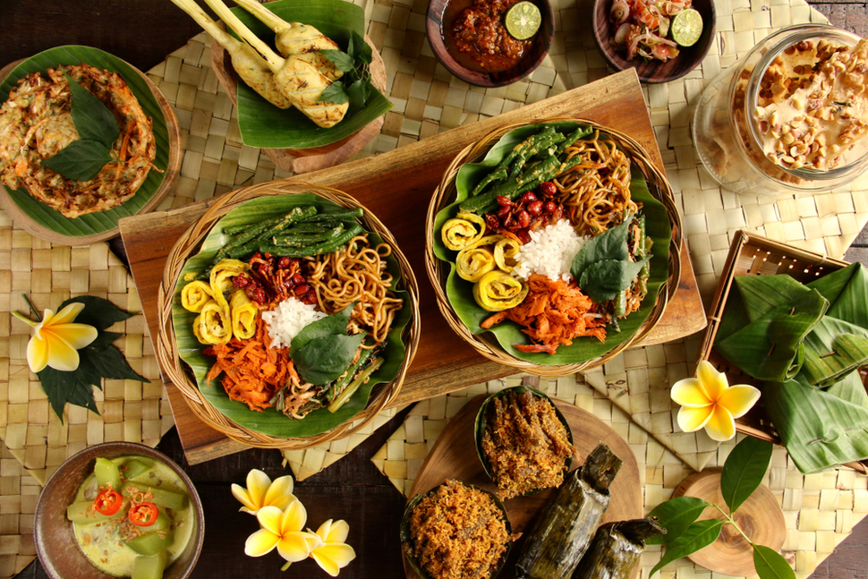

 Jawa Timur merupakan salah satu Provinsi di Indonesia yang terletak di bagian Timur Pulau Jawa. Jawa Timur memiliki luas wilayah 47.922 km ² dan Jawa Timur merupakan wilayah terluas dari 6 Provinsi yang ada di Pulau Jawa. Jawa Timur beribukota di Kota Surabaya yang memiliki banyak tradisi yang pastinya unik dan menarik. Dan untuk sahabat yang berkunjung ke Jawa Timur, tidak boleh melewatkan wisata kuliner yang ada di Jawa Timur khususnya makanan khas Jawa Timur. :